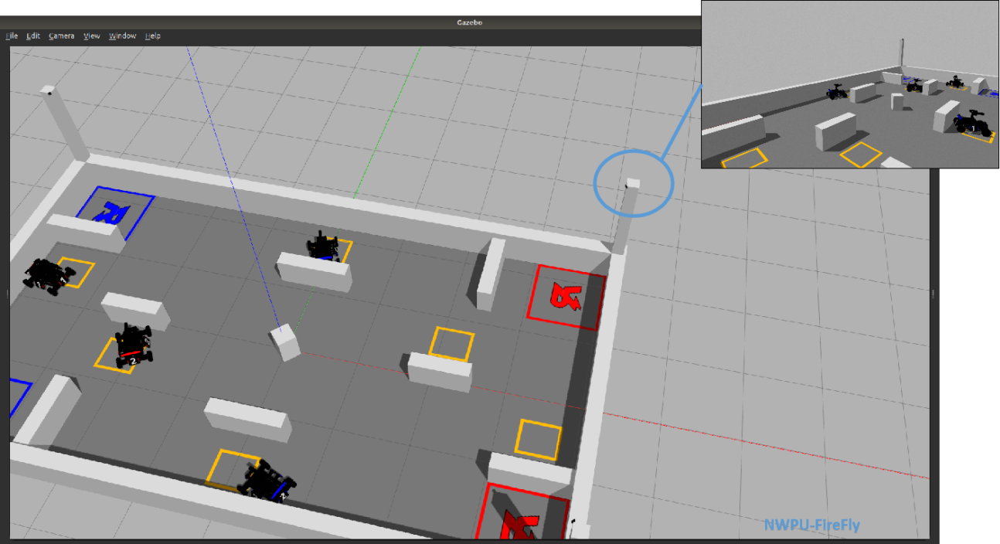
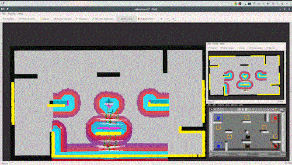

ICRA AI Robomaster Challenge
As a team leader, I led our team firefly participated in ICRA Robomaster AI Challenge. In the August of 2020, we got sixth place in the navigation and strategy groups, eighth place in the perception group in 72 terms.
My main work is as follows:

1. I built a simulation platform based on gazebo, which can simulate sensor data and motion of robot. More importantly, this platform can cooperate with openai_ros package, which can provide the same standard reinforcement learning interface as openai gym. During COVID-19, the development of strategy and navigation mainly rely on this simulator.
2. I led development of the navigation part. We use cartographer-slam to build a map of the competition field and calculate the actual position of the current robot. Then, in the planning module, we modify the global-planning algorithm by inputting the path of another robot into the costmap of the current robot, so that we realize a simple multi robot planning. 3. I also participated in coding strategy part. We used the behavior tree method for action selection, so that robots on the field can complete different behaviors according to different information of the field.
3. I also participated in coding strategy part. We used the behavior tree method for action selection, so that robots on the field can complete different behaviors according to different information of the field.
Now we are competing in 2021！
A Wheeled Robot with Lidar
In my first summer vacation, I led our team won the second place in FIRA Roboworld Cup, Robosot Race Competition Development Group.
In this project, the whole robot is designed by us.